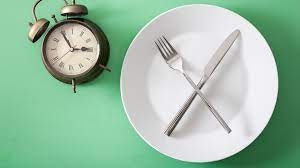

Al hacer una ayuno intermitente el cuerpo gasta las reserbas de grasa que sen ecuentra en el horganismo, por ende consume el exsedente de grasa poniendo al cuerpo en mejor estado fisico. Al convinarlo con ejercicio se encuentra con que el cuerpo pude mejorar la figura y verser mas sano.